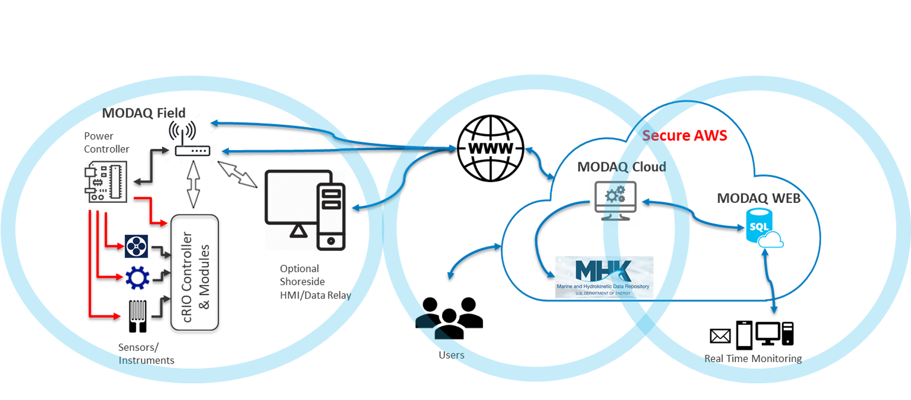

MODAQ Documentation
Until this message is removed, this guide is in draft and actively being edited. During this time, some sections may be blank or not fully developed.
General Overview
The National Renewable Energy Laboratory (NREL) has developed a data acquisition system to support laboratory (component) and in-water validation and testing of Marine Renewable Energy (MRE) technologies. The Modular Ocean Data AcQuisition System (MODAQ) is a robust system built on industrial grade hardware that can acquire high-quality and summary data from many sensor and instrument types. MODAQ includes modules to perform real-time QC screening, system health monitoring, and send alerts. MODAQ is also part of a larger data management, processing, visualization, and archiving system. As such, MODAQ consists of three primary components that are designed to provide a flexible hardware and software framework:
- MODAQ:Field - is the sensor/instrumentation suite with data acquisition hardware. It's designed to be highly configurable to meet the measurement requirements of a specific project. While Field can store its data locally, the power of the MODAQ system is realized when Field has internet connectivity.
- MODAQ:Cloud - is hosted on AWS and provides an ingestion point for the field data, as well as quality control, processing and analyses layers, data archives, derived products, and collaboration space. The standardized processing of data is accomplished through leveraging the MHKiT Data Pipeline. AWS provides the capability to work on very large datasets efficiently and collaboratively. The open-source MRE data processing software, MHKiT provides the analysis functions for MODAQ.
-
MODAQ:Web - is a web-based dashboard for near real time monitoring of key measurement and health parameters. For bandwidth sensitive deployments, Web uses summary data generated by MODAQ:Field that is transferred to its own AWS bucket and stored in a SQL database.

Data are acquired using MODAQ:Field, then sent to MODAQ:Cloud for temporary storage, client access, quality control (QC), and processing. Summary data are sent to MODAQ:Web for real-time visualization. MODAQ also includes a user controlled pipeline to the MHKDR to streamline the submission process.
MODAQ is able to support a wide range of missions in the various MRE environments (wave, tidal, river, open ocean), archetypes, and scales with three fundamental missions:
- Field Deployment, Testing/Validation, and Operation: Provide the field measurement capabilities needed for operations and testing/validation of wave and current MRE technologies at established testing sites (e.g. WETS and PacWave) and at or other sites with limited infrastructure. These RD&D activities include many different in-water tests, such as power performance, power quality, mechanical loads, and health and safety.
- Component Testing: Provide measurement capabilities and infrastructure needed for component validation/testing such as power performance measurement of a PTO on a dynamometer test stand.
- Environmental Monitoring: MODAQ can acquire data from sensors and instruments to monitor meteorological or oceanographic parameters concurrently with measurement objectives. For instance, data from a weather station, current meter, and telemetry from a wave buoy could be acquired along with hydrophones measuring underwater sound can provide a more complete picture to the device's power and load measurements.
MODAQ:Field
MODAQ:Field is the primary focus of this document and it provides the core data acquisition duties including: sensor reading/polling, scaling/conversion, data processing, local storage, and data transmission. It is a standalone system that is based on the National Instruments CompactRIO embedded control and acquisition system, as well as additional components as required, such as a WiFi/Cellular/satellite modem or a network-based power management system. This system provides a high-quality and robust platform that meets the rigorous requirements of IEC certification level testing. MODAQ Field’s modular hardware design allows modules to be swapped out so that it can be rapidly reconfigured to meet custom application requirements. Additional chassis can be connected to the primary chassis to increase the number of measurement modules beyond the 8 slots in the primary chassis. Multiple MODAQ Field systems can be deployed and tightly synchronized via GPS-based timing. The software is also modular, providing a similar reconfiguration capability at the programming level.
The National Instruments CompactRIO was chosen as the data acquisition controller since it’s an embedded system that provides a powerful stand-alone acquisition platform with both high-performance FPGA and real-time deterministic processors. The cRIO chassis has up to 8 slots for input/output (I/O) modules and many I/O modules are available to create a customized acquisition system. These have a range of capabilities to read various analog inputs, serial data streams, and digital I/O. The MODAQ software is written in National Instruments LabVIEW, which is a rapid development programming environment commonly used in industrial testing centers.
MODAQ Field capabilities include:
- Data acquisition: bi-directional analog (current and voltage), and digital (RS-232/RS-422/RS-485, USB, IP, etc) channels including temperature, loads/strains, rotations/positions, and pressures.
- High speed sampling where necessary.
- Remote management: reconfigure the DAQ and data processing algorithms, and monitor/control power to individual components
- Data QC: a range of low-level QC checks to verify sensor, instrument, and DAQ operation.
- Data conversion: data are converted from their raw form (i.e. binary, ratiometric, etc) to scaled values/engineering units.
- Local data storage
- Internet and/or local area network file transfers.
- Configuration utility.
- System Monitoring and Alerts: real-time monitoring of specified parameters, such as position, temperature, power, etc. with tiered email alerts
- IEC compliant software modules for power performance, power quality, and mechanical loads. Other modules include motion, availability, and control.
- Control and automation.